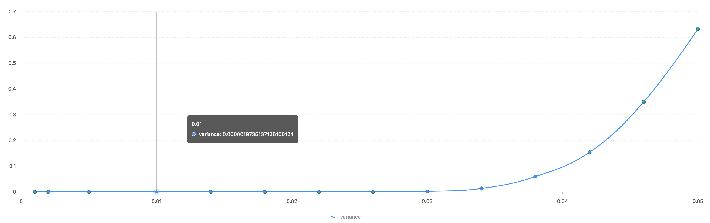

使用3000个数字，来模拟3000粒种子。其中，0表示非转基因，1表示转基因。 设实际概率为p，举例来说，如实际概率为0.01，则p=0.01，计算出1的个数：3000*0.01=30个1，即模拟实际有30粒转基因种子的情况。 实验开始： 将这30个1，随机分布到这3000个数字中。 然后再分组（设组数为m），统计含有1的组的个数：n。计算推算的概率，公式为：x= 1 - (1 - n/m) ** (m/3000)。 这样重复1000次实验，得到1000个x，计算这1000个x与实际概率p的均方差。 实际运行时，我们将p设置为如下概率，分别为： p = [0.005, 0.002, 0.001, 0.01, 0.014,0.018, 0.022, 0.026, 0.03, 0.034, 0.038, 0.042, 0.046, 0.05]; 然后得到均方差图如下：
